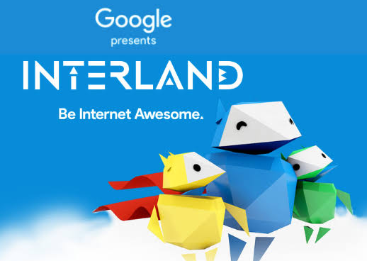
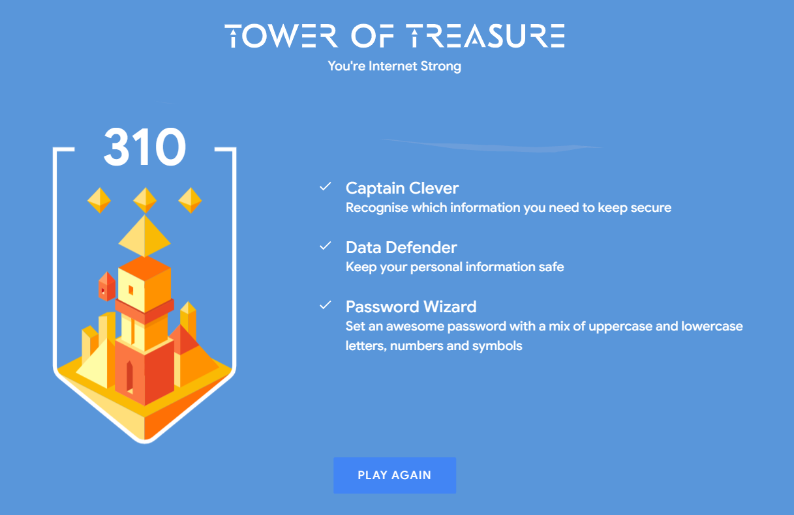
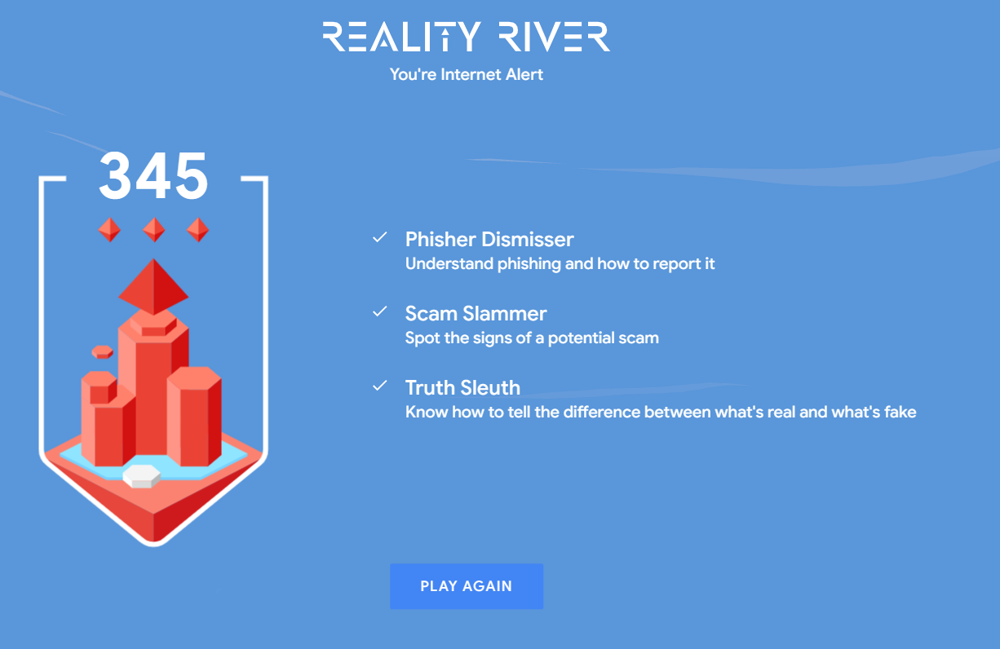
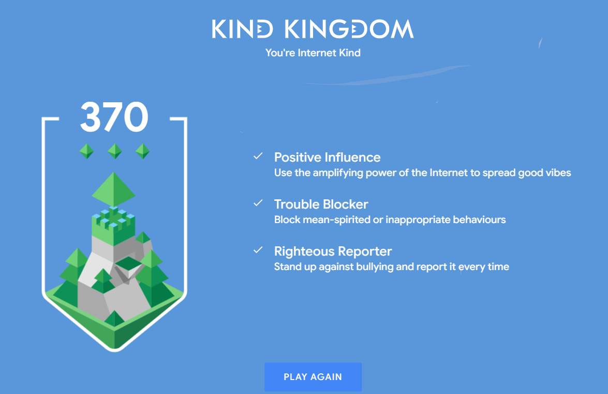
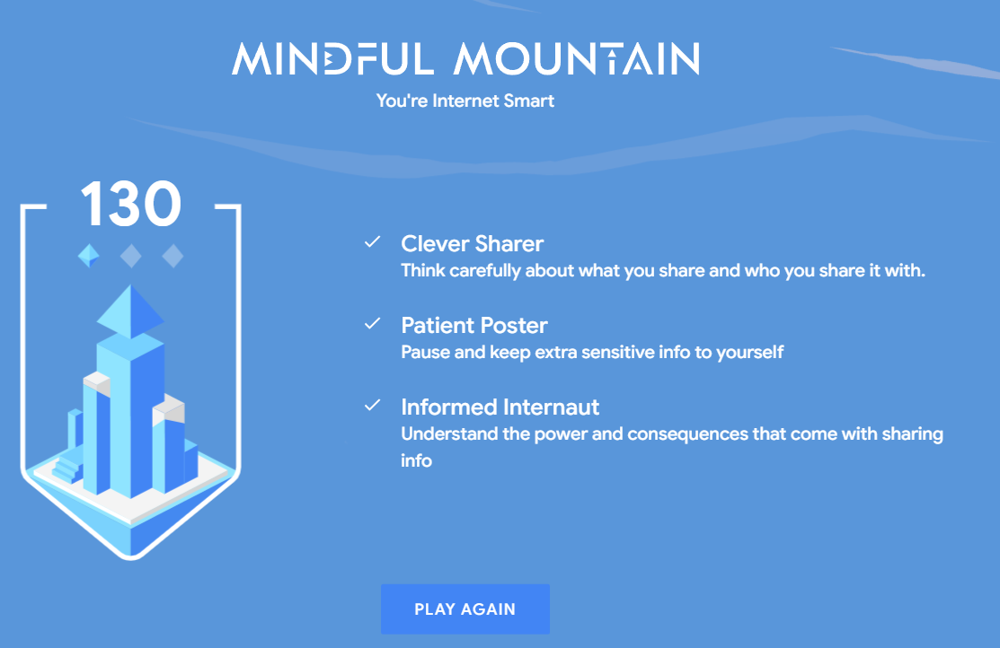

Internet Saftey

Interland Game Achievments
Interland Game Achievments




Interland is a website game made by google to help people understand what do to in specific cyber probems in cyber security.
You're Internet Smart tells you to send what your sending to the right people.
You're Internet Kind tells you what are the right things to do on social media.
You're Internet Alert tells you how to avoid getting scammed and hacked.
You're Internet Strong tells you how to safely secure your private information.
Mr. Nowaks 2 tips on being internet safe:
At least 2 different passwords (one exclusively for email the other for whatever else)
at least 2 different emails (one for junk, one for banking-etc)